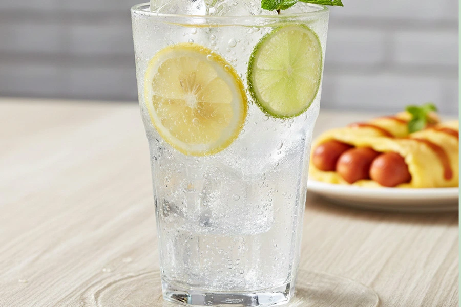
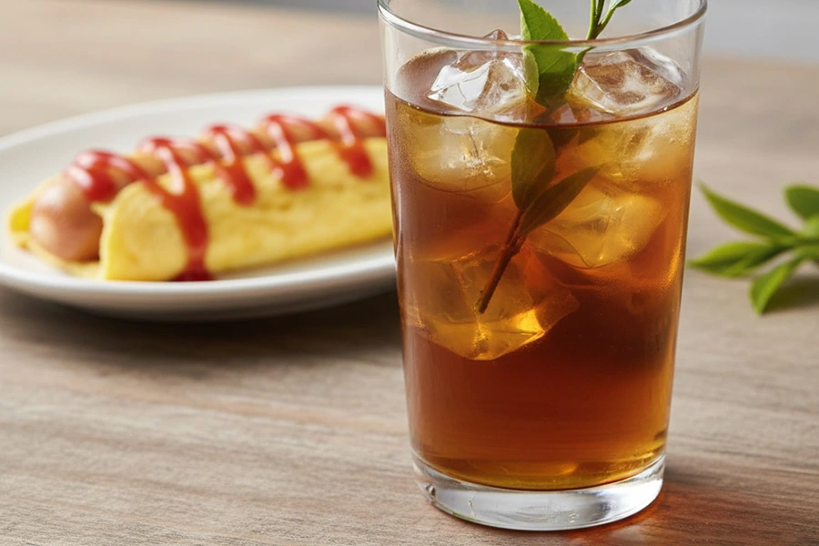

暢銷飲品區 🍋💦

冰鎮青檸氣泡水🍋
「啵滋一口，油膩退散！清爽衝擊，味蕾甦醒。」 推薦理由： 檸檬的酸香與氣泡水的暢快感完美結合，不僅能迅速瓦解口中的油膩，還能帶來清新的餘韻。視覺上，晶瑩的氣泡與鮮亮的檸檬片，本身就是一幅清涼的畫作。

醇厚回甘冷泡烏龍 🌿🧊
「去油解膩，不留痕跡。慢熬烏龍，品味純粹。」 推薦理由： 冷泡烏龍茶保留了茶葉最自然的甘甜與清香，茶多酚能有效分解油膩感。無糖的選擇更是讓味蕾回歸純粹，與蛋包腸的豐富口感形成平衡。